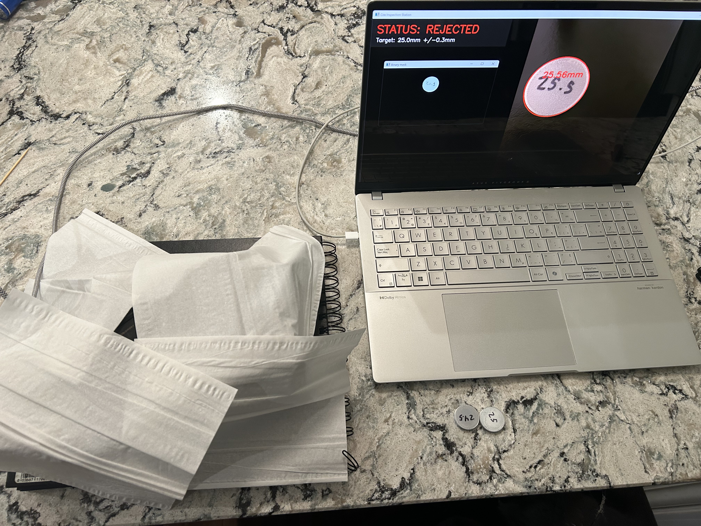
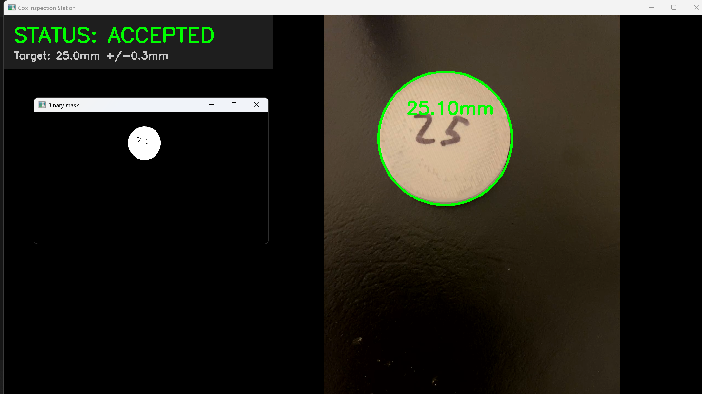
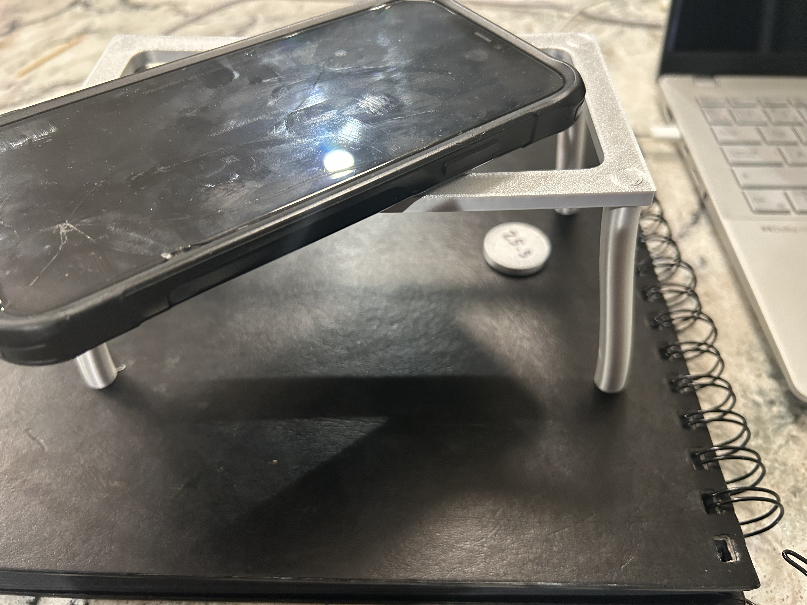

Automated Optical Inspection
Date: February 16, 2026
Objective
To design an automated inspection system for 25mm parts using computer vision. The station detects sub-millimeter defects and automatically rejects any part that is outside the ±0.3mm tolerance.

Iterations
Background Optimization
Problem: The initial white background created shadows that the camera mistook for part of the object, causing false oversize errors.
Solution: Switched to a matte black background. This eliminated shadow interference and maximized contrast, allowing proper detection of the diameter.
Lighting Control (Diffusion)
Problem: Direct light created glare on the shiny 3D-printed plastic. The sensor interpreted these white reflections as holes in the part, breaking the measurement contours.
Solution: Applied a diffusion filter to scatter the light evenly (tissues). This removed the glare and reduced "pixel jitter," allowing the system to consistently hold the ±0.3mm tolerance.
Results
- Accuracy: The system achieved a consistent 0.1mm accuracy during live testing.
- Sensitivity: Precise enough to detect the 3D printer’s typical inaccuracies of 0.1-0.2mm.
- Verification: The system verifies the reading is stable for 2.0s before confirming the final Pass/Fail status.

